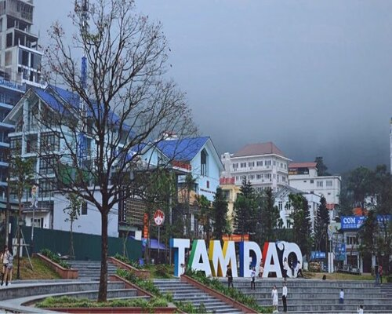

Tam Đảo - Thiên đường nghỉ dưỡng núi lưng chừng mực
Chào mừng bạn đến với bài viết hôm nay, chúng ta sẽ cùng nhau khám phá một thiên đường nghỉ dưỡng xanh mát giữa những dãy núi hùng vĩ - Tam Đảo. Tam Đảo, nằm ở huyện Tam Dương, tỉnh Vĩnh Phúc, là một điểm đến lý tưởng cho những người muốn tránh xa khỏi cuộc sống hối hả của thành thị và tận hưởng không khí trong lành của núi rừng Bắc Bộ. Với độ cao khoảng 900 mét so với mực nước biển, Tam Đảo có khí hậu mát mẻ, dễ chịu quanh năm.
Nổi tiếng với những con đèo quanh co và đồng cỏ xanh ngắt, Tam Đảo đưa du khách vào một thế giới hoang sơ và hùng vĩ. Núi Tam Đảo là nơi hội tụ của nhiều loại động, thực vật quý hiếm, tạo nên một hệ sinh thái động và thực vật đa dạng. Điều này thu hút những người yêu thiên nhiên và muốn khám phá vẻ đẹp tự nhiên hoang sơ. Không chỉ có thiên nhiên hùng vĩ, Tam Đảo còn nổi tiếng với những công trình kiến trúc tâm linh như chùa Thác Bạc và chùa Tay Thiên. Chùa Thác Bạc, với thác nước hùng vĩ, là điểm đến yêu thích của du khách muốn tìm kiếm không gian tĩnh lặng và tận hưởng sự yên bình của núi rừng. Không gian nghỉ dưỡng tại Tam Đảo cũng rất đa dạng, từ những homestay nhỏ xinh ven đồng cỏ đến các resort sang trọng trên đỉnh núi, đều mang đến cho du khách trải nghiệm thoải mái và đầy ấn tượng. Tam Đảo không chỉ là điểm đến dành cho những chuyến thám hiểm núi rừng mà còn là nơi lý tưởng cho những cặp đôi muốn tận hưởng không khí lãng mạn và hòa mình vào thiên nhiên tươi mới. Hãy để Tam Đảo làm bản hòa nhạc riêng cho cuộc sống của bạn và tạo nên những kỷ niệm khó quên.